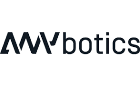

Private · Switzerland
ANYbotics Company Profile
Industrial Robotics,Inspection Robotics,Quadruped Robotics
ANYbotics facts
- Category
- Industrial Robotics,Inspection Robotics,Quadruped Robotics
- Primary focus
- Autonomous Robotics
- Segments
- Autonomous Robotics · Industrial · Quadruped
- Country
- Switzerland →
- Type
- Private
- Ticker
- Not public / not listed
- Website
- Official website →
- Focus
- Autonomous Industrial Inspection,Legged Robotics,Asset Monitoring,Hazardous Area Inspection
Robologai signal
ANYbotics is tracked for autonomous robotics deployment: mobile systems, field robots, delivery, inspection, logistics, or other real-world automation lanes. Tracked products include ANYmal Platform.
Strategic Positioning
Why ANYbotics matters to the physical AI economy.
Autonomous RoboticsIndustrialQuadruped
3 intelligence tags attached to this profile.
Company Snapshot
Core signals Robologai tracks for ANYbotics.
Product Lineup
Tracked robots and products associated with ANYbotics.
Quadruped Robot,Inspection Robot,Industrial Robot
ANYmal Platform
Industrial Inspection,Oil & Gas Inspection,Chemical Plant Inspection,Power & Utilities,Mining,Railway & Transportation
Contact for pricing
Robot profile →
Data Quality
Robot coverage, official sources, market type, and review status.
Source Notes
ANYbotics source trail.
Market Signal
How ANYbotics fits into the robotics economy.
Related Companies